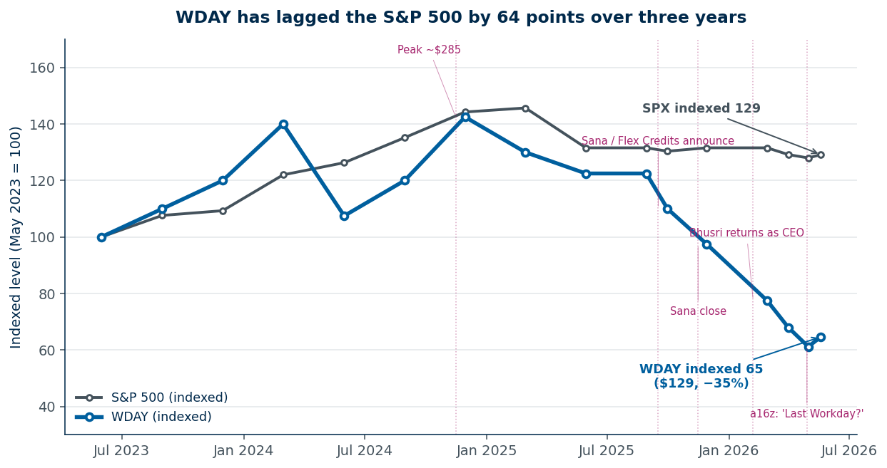
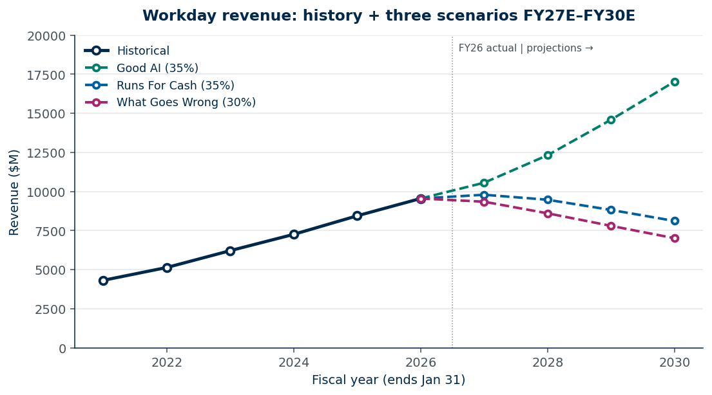
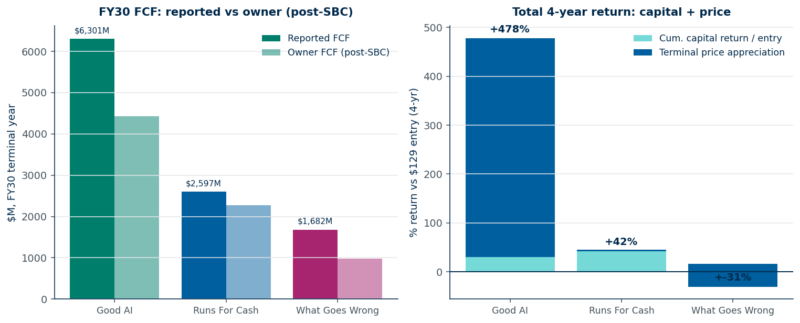
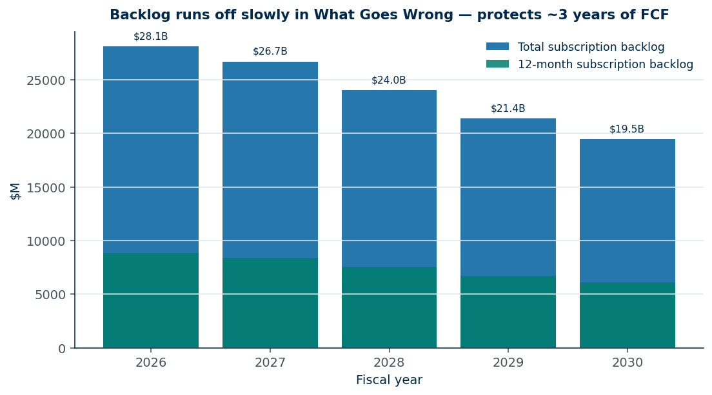
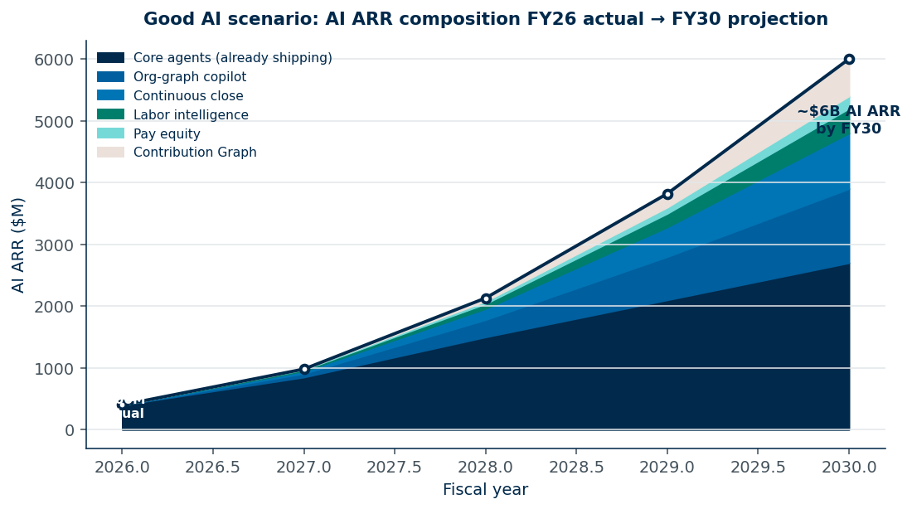
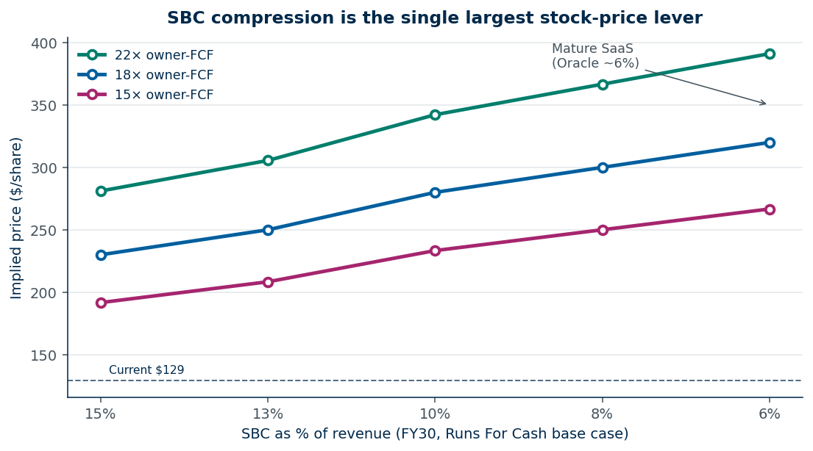
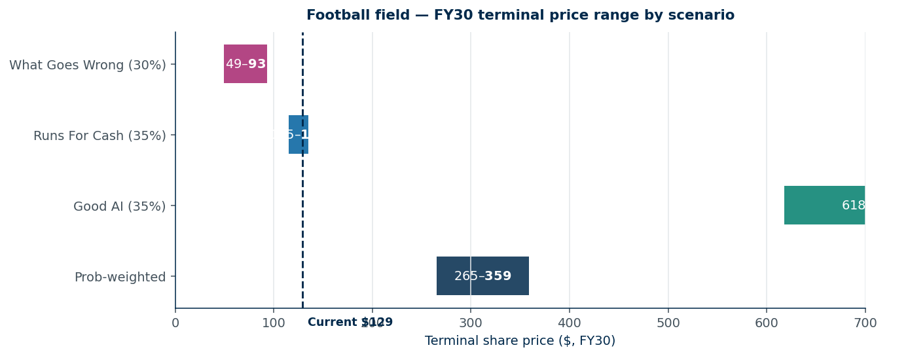

Image 1. Sana for Workday, GA March 17, 2026 — conversational front door replacing the menu. 11,500 customers open this chat bar instead of clicking through HCM tiles. (Source: SiliconANGLE.)
Image 1. Sana for Workday, GA March 17, 2026 — conversational front door replacing the menu. 11,500 customers open this chat bar instead of clicking through HCM tiles. (Source: SiliconANGLE.)JAOD, May 20, 2026. One-page tearsheet for the IC: WDAY_TEARSHEET.md. Addendum (mix / SBC / attach): WDAY_BRIEF_ADDENDUM.md. Model assumptions walkthrough: MODEL_ASSUMPTIONS.md. Excel: WDAY_Model.xlsx. Simulated IC dialogue: IC_MEETING_QA.md.
The thesis in one box. Great software for the biggest, most complex businesses in the world. Clunkiness solved by AI. Competitive threats are real but slow-moving — we will know whether they have landed in two to three years. From here, the company goes in one of two directions, both of which pay shareholders: (1) a truly magical AI-powered product that is unique and not replicable, or (2) running itself for cash. The market prices neither outcome correctly today.
A franchise the market valued at $80 billion two years ago is on offer at $33 billion. The operating metrics improved. Workday runs payroll for roughly half of corporate America. It is the system of record for HR and Financials at more than 65% of the Fortune 500. Seventy-five million employees log into it. Eleven thousand five hundred customer organizations. Nine and a half billion dollars of revenue. The market cap is $33.24 billion. Enterprise value $31.62 billion.
The stock is at a five-year low. Down 47% in eighteen months. The S&P is up roughly 30% over the same window.
Revenue grew 13% while $30 billion of market cap evaporated. F500 penetration moved past 65%. AI ARR went from zero to $400 million.
Three software lines.
HCM is the original franchise. Core HR, Payroll, Recruiting, Talent, Time, Learning, Absence. What an F500 CHRO buys to run sixty thousand employees across twenty-three country payrolls with reciprocal tax treaties, SOX trails, and union benefits. 60% of subscription today. 88% eight years ago.
Financials is the second. General Ledger, AP/AR, Procurement, Expenses, Spend, Adaptive Planning. Cross-sell into the HCM base. 7% of subscription in fiscal 2018. 26% today. Adaptive Planning alone runs ~14% of subscription. Quadrupled in eight years.
Illuminate and Flex Credits is the third. Illuminate is the AI layer — twelve agents in GA plus Sana (conversational front door, GA March 17, 2026), HiredScore, Evisort, Paradox. Flex Credits is the consumption wrapper for AI usage above the subscription baseline. AI ARR exited FY26 at more than $400 million, growing more than 100% YoY. New Q4 ACV from AI products alone was more than $100 million. The product line did not exist eighteen months ago.
Subscription drives $8.83 billion of $9.55 billion FY26 revenue. 92.5%. Subscription gross margin 82.7%. Professional Services runs $719 million at a structural ~10% gross-margin loss. The loss is intentional — PS seeds implementation that flows out to the partner ecosystem. PS revenue declined nominally in FY26 ($728M to $719M) while customer count grew 8%. Not a problem. Integration economics flipping.
US runs 76% of revenue. International 24%, flat for six years. The FY26 disclosures contradict the flatness — Ireland long-lived assets jumped $215 million to $531 million, the largest EMEA capex commitment in company history.
11,500 customer organizations, ~7,000 core HCM or Financials. More than 65% of the Fortune 500. More than 75 million users under contract.
Four lanes. Each grounded in the existing install base and the customer relationship already paid for.
Financials cross-sell. HCM penetration in the F500 above 65%. Financials attach below 40% at most. Workday is selling Financials into rooms where they already own the HR seat. Financials grew 25% in FY26 inside a $50 billion enterprise-Financials TAM still dominated by Oracle EBS and SAP ECC modernization cycles.
Adaptive Planning into the FP&A seat. Product is best-in-class. Distribution into the CFO suite is real. Adaptive went from a 2018 acquisition to ~14% of subscription. FAD 2025 roadmap puts agentic planning workflows live in FY27.
Illuminate and Flex Credits as agentic monetization on existing tenants. The $400 million AI ARR run-rate is already there. The customer relationship is already there. Distribution cost is near zero — SKUs sold into 11,500 tenants that already write checks. If AI ARR compounds at 50% for four years it is $2 billion. At 80%, $4 billion. On a $9.5 billion base, that is the difference between a melting ice cube and a re-acceleration.
International. ~5% share of a $40-50 billion HCM-International TAM. Ireland capex is the EMEA push. The EU Pay Transparency Directive (mandatory June 7, 2026) is a regulatory tailwind aimed at workforce systems of record. A doubling of share over five years means $4-5 billion of incremental revenue that sits in no consensus model.
Every lane extends into a room Workday already stands in.
The market uses one scoreboard for two different games. Sub-three times forward revenue. Roughly twelve times headline free cash flow. Low growth multiple. Cheap-looking. Stable-looking. Wrong.
Two real outcomes deserve two scoreboards. The market uses one for both. Both real states price above $129 — on different scoreboards.
If AI works, the right metrics are growth metrics. Subscription ARR multiple. AI ARR run-rate. Operating leverage on a re-accelerating top line. Multiple expansion as the disclosure improves and AI ARR breaks out as a line item. On growth metrics, the stock is undervalued.
If AI doesn't work, the right metrics are cash metrics. Free cash flow yield. Dividend yield. Cumulative capital return per share over a multi-year hold. FCF per share on a shrinking share count. On cash metrics, with a 60% dividend payout and a serious buyback, the stock is undervalued.
The market picked the cheaper-looking metric — low growth, low multiple — and applied it to both states. Wrong on both.
A third state exists — "I'm wrong." Management fails to execute either branch. AI doesn't land and the cost cut doesn't happen. The market prices that third state across all three. That is the trade.

Figure A. WDAY at 65, the S&P at 129 — both indexed to 100 at May 2023. A 60-point divergence over three years on a franchise that gained share. The drawdown frames four catalysts. (1) WDAY's late-2024 peak near $285 broke when sub-growth guidance came down in February 2025. (2) September 2025, Workday Rising — Sana announcement and Flex Credits launch. Sentiment shifted to "they have to pay for a $1.1B AI bet and a pricing transition at the same time." (3) November 2025, Sana close; integration risk is real. (4) February 6, 2026 — Bhusri returns as CEO, Eschenbach exits; the tape read it as regression. (5) April 28, 2026 — a16z publishes "Workday's Last Workday?"; sell-side cuts followed. Net: $30 billion of market cap evaporated while revenue grew 13%, F500 penetration moved from above 60% to above 65%, AI ARR went from near zero to $400 million, and twelve agents shipped. Operating evidence and price action are pointing in opposite directions. Live chart: stockanalysis.com/stocks/wday/.Three scenarios. Plain labels. AI works. AI doesn't. I'm wrong.
| Scenario | Probability | FY30 terminal $/sh | Cumulative cap return $/sh | TSR (4yr) | IRR |
|---|---|---|---|---|---|
| AI works | 35% | $572 | $0 | +342% | 45% |
| AI doesn't | 35% | $107 | $16 | −5% | −1% |
| I'm wrong | 30% | $68 | $5 | −43% | −13% |
| Prob-weighted | 100% | — | — | +105% | ~20% |
Probability-weighted four-year TSR: +105%. Three-year (FY29): +77%. The arithmetic does not require the AI case to be right. It requires the AI case to be possible.
| ($B unless noted) | FY26 actual | I'm wrong FY30 | AI doesn't FY30 | AI works FY30 |
|---|---|---|---|---|
| Revenue | 9.55 | 6.69 | 6.76 | 17.59 |
| Op margin (GAAP) | 7.5% | 35.1% | 53.1% | 30.1% |
| FCF | 2.78 | 1.61 | 2.16 | 6.51 |
| Diluted shares (M) | 268 | 232 | 211 | 245 |
| FCF / share | $10.36 | $6.91 | $10.23 | $26.60 |
| Cumulative dividends / share | — | $5.16 | $15.81 | $0 |
| Terminal price / share | $129 | $68 | $107 | $572 |
| TSR (price + div) over 4 yr | — | −43% | −5% | +342% |
| Annualized IRR | — | −13% | −1% | 45% |
| Probability | — | 30% | 35% | 35% |
Source: data/deck_data.json. FY ends Jan 31; FY26 closed Jan 2026. JSON keys for the three scenarios remain ai_winner, run_for_cash, what_goes_wrong for compatibility; the surface labels are AI works, AI doesn't, and I'm wrong.

Figure 1. Three revenue paths off a single history. AI works re-accelerates. AI doesn't shrinks under managed contraction. I'm wrong: same shape, worse cost discipline.Four catalysts decide the trade in the next twelve months.
| Date | Event | Bull tell | Bear tell |
|---|---|---|---|
| May 21, 2026 | Q1 FY27 — Bhusri's first | AI ARR run-rate >$500M | Sub growth <12% |
| Aug 2026 | Q2 FY27 | AI ARR >$600M (>100% YoY) | NRR commentary turns defensive |
| Sep 2026 | Workday Rising / FAD 2026 — Bhusri's first as returned CEO | Margin glide, SBC ceiling, sales-comp redesign | No opex or SBC commitment |
| Feb 2027 | Q4 FY27 — first full year with Agent SoR live | Gross retention holds 97%+ | Headcount-clause repricing flags in MD&A |
Three of four hit and the multiple opens. None hit and capital return still earns ~4% IRR.
Eight independent ways the market is wrong. The thesis needs three to land. Each row carries the two-metric-sets framing — what the market prices, what the disclosure says.
| # | Dimension | Market prices… | Actual disclosure |
|---|---|---|---|
| 1 | Pricing unit | Per-seat SaaS, AI compresses seats, revenue compresses | Flex Credits live, consumption mix 8-12% by FY28, 22-30% by FY30. Bear's anchor mechanic softens by FY29. |
| 2 | SBC | 17% of revenue forever; owner-FCF multiple stays ~28× | SBC fell 23% → 17% over five years. Mature target 7-10%. Each 100bps of compression at FY30 = ~$20-35/share. |
| 3 | AI ARR visibility | Invisible, unreliable, buried in subscription | $400M+ ARR, +100% YoY, $100M+ Q4 ACV. Separate line item by FY28 re-rates the multiple alone. |
| 4 | Customer mix | TAM overlaps with Rippling/Deel SMB AI-natives | Workday is enterprise — >3K EE = 72% of ARR. The AI-natives are sub-1K EE. The disruption math is being run on the wrong cohort. |
| 5 | Bhusri's return | Founder-back is regression — operator failed | Founders return when the strategic bet is bigger than the operating playbook. The board paid $1.25M base, 200% target bonus, large equity to bring him back. Conviction in dollars. |
| 6 | Integration economy | Accenture/Deloitte squeezed by AI code-gen — bad for Workday's rail | Squeezed cost flows to customers, lowering TCO, opening the next tier (10K-EE mid-enterprise) that couldn't justify a $20M implementation. The first-order effect on Workday's TAM is bullish. |
| 7 | International | Flat 24-25% of revenue for six years — assume it stays flat | Ireland long-lived assets +$215M to $531M (+147%) in FY26 — biggest EMEA capex in WDAY history. International TAM in HCM is $40-50B. WDAY at ~5%. |
| 8 | Financials diversification | Still seen as an HCM company | HCM share of subscription fell 88% → 60%. Financials quadrupled 7% → 26%. Growing 25%/yr inside a $50B+ enterprise-Financials TAM. Diversification not priced. |
The bear case needs most of these to compound. AI-natives win enterprise (not the mid-market they actually serve) and no consumption pivot and SBC stays elevated and Bhusri bungles and Microsoft ships HCM. Conditional probabilities compound against the bear.
Switching costs at Workday are physical. PMs pattern-match to consumer SaaS where churn compounds in year one — wrong shape. Workday runs payroll for half the F500. Multi-year contracts. SOX trails in-tenant. A hundred-plus downstream systems wired in. Below: AI fails to differentiate, management pivots to cash, the stock works through capital return rather than appreciation.
This is the change from the prior framing. AI doesn't is not Oracle-on-modest-growth-plus-capital-return. It is managed contraction. Revenue shrinks 10% a year through FY30. The cost cut is aggressive. The cash gets returned.
The setup. Revenue from $9.55 billion in FY26 to $6.76 billion in FY30 — down about 30% across four years. R&D as a percent of revenue drops 27% → 13%. S&M 24% → 10%. SBC 13% → 6%. Engineers replaced by AI agents, AI compute spend eats some of the savings, the net is still a hard step-down in operating cost. Headcount 21,070 → ~12,000. F500 anchors stay — re-cutting payroll on sixty thousand employees costs hundreds of millions and creates regulatory exposure. Stayers absorb price increases at renewal via headcount-clause repricing.
Why FCF holds. Three mechanics. The $28.1 billion subscription backlog burns down protecting cash conversion — revenue lags billings 12-36 months, backlog falls to ~$22 billion FY30. The cost cut outpaces the revenue decline. R&D at 13% of $6.76 billion is still over $850 million absolute, more than ServiceNow spends. S&M at 10% reflects nothing to sell into expansion. Operating margin lifts 7.5% → 53%. Buybacks at low prices compound the per-share math. Dividend initiated FY27, payout ratio reaches 60% by FY30. Share count 268 million → 211 million, a 21% retirement.
The numbers. FY30 revenue $6.76 billion. FY30 FCF $2.16 billion. FCF per share $10.23, flat with $10.36 today on smaller shares. Cumulative dividends $15.81 per share over four years — 12.2% on the $129 entry, collected in cash. Terminal price $107, barely moves. TSR flat at −5%. The money is in the dividend.
The reframe. In AI doesn't, the stock works not because price recovers but because cash gets returned at a low entry price with no appreciation required. The business shrinks. The buyback compresses share count enough that remaining cash earns more per share than it does today.

Figure 2. In AI doesn't, dividends do all the work — price appreciation is zero. Left: FY30 reported and owner FCF by scenario. Right: total return split into capital return and price appreciation.
Figure 3. The backlog defends three years of cash, not terminal value. Roughly three years of FCF conversion are protected as $28B burns down. Headcount-clause repricing compounds at the renewal wall — which is why the case pays in dividends, not price.The floor sits in the contracts. Subscription accounting plus multi-year terms plus a discretionary cost base means even a brutal revenue path returns flat over four years.
The 10-K already discloses the first signs of headcount-clause repricing — and the inflection was the FY25 10-K filed March 2025, not FY26. The FY25 filing was the first to say "We have experienced... reduced growth in headcount-level commitments upon renewals of existing customers." FY26 retained the language without further tightening. The deceleration has been visible to attentive readers since spring 2025. Past tense, in a benign macro. The risk-factor language is sharper: "Our subscription-based model is largely based on the size of our customers' employee headcount... Prolonged decreases in our customers' headcounts can materially impact our business." The 97% gross retention figure has a critical caveat — it "does not account for additional revenue earned from add-ons or net expansions, which include volume and price adjustments." A customer renewing at half-seats counts as 100% gross-retained. The backlog protects roughly three years of cash but not terminal value if headcount-shrink plays out. Repricing risk lives at the renewal wall, not inside contracted backlog. That is why the position is sized smaller than a clean asymmetric setup would suggest.
R&D in all three cases is worth saying explicitly. R&D as a percent of revenue, FY26 to FY30: AI works 27% → 23% (still investing); AI doesn't 27% → 13% (aggressive cut); I'm wrong 27% → 18% (an intended cut that did not fully happen). In every case engineers come down. In every case AI compute spend absorbs some of the savings. The net R&D move is the cleanest way to read where management ended up.
The sell-side model is already obsolete. Per-seat SaaS where the bear case is mechanical seat compression — wrong model. Workday is mid-transition.
The historical contract: per-employee, per-month, per-module. Seats × ARPU × add-ons = revenue. Bear math works in that world. Workday is already monetizing differently. AI Flex Credits launched at Workday Rising on September 16, 2025. Usage-based credits, baseline shipped with subscription, consumption above bought like AWS compute. The Q4 FY26 disclosure: $400M+ AI ARR with about fifty customers on Flex Credits as of February 24, 2026 — Accenture, Nike, Merck named. Chief Commercial Officer Rob Enslin characterized it as "a second-half fiscal 2027 motion, with revenue recognized ratably thereafter." Management itself signaling the revenue inflection is FY28-onward, not FY27.
The implication: Workday is migrating away from seat-count exposure before AI downsizing forces it. Slower than bulls assume. Glide path: 8-12% consumption-priced bookings by FY28, 22-30% by FY30, 35-45% by FY32. Two reasons. The customer benefit is symmetric — AI eats 30% of work, customer wants to pay for outcomes not headcount. Workday loses the seat line and gains the consumption line at better unit economics. The bundle math also works both ways — AI agents bundled with per-seat subscription lift effective per-user price even as seats fall.
The central differentiated view, with a realistic timeline. Per-seat through FY30: bear wins. Transition at the FY30/FY32 cadence above: bear loses its anchor by FY29. The headcount-clause repricing risk that the 10-K already discloses softens from a −5% blended drag in the pure per-seat world to roughly −3.5% by FY29 in the consumption-priced world. That delta is worth $15-20 per share in the AI-doesn't terminal.
The binary gate is sales-force compensation design. Workday reps have been comped on per-seat ACV for fifteen years. Salesforce hit exactly this with Agentforce in 2024-25 and now runs three concurrent pricing models because the field refused consumption-only. Honest split:
The watch-list collapses to one binary: FAD 2026 in September, comp redesign yes/no. Without it, the transition slips two years and the 10-K headcount-clause repricing risk compounds.
The franchise is gaining share, not defending. The AI-doesn't case is the floor. Disclosed evidence runs against the disruption narrative.
Workday is the Boeing 787 of HCM. Users complain. The UI is clunky. Implementation is long. Learning curve is steep. They are right. Workday is built for 60K-EE multi-jurisdiction payroll, not 200-person startups that want pretty buttons. Same trade Boeing made with the 787 versus the Cirrus SR22. The SR22 is sexier. It has a parachute. It looks great in the hangar. The 787 carries 290 across the Pacific. You fly the 787 because nothing else does the job. Rippling and Deel are SR22s. Fine for their missions. They will not replace Workday at a $50B-revenue F500 with twenty-three country payrolls and SOX 404 obligations.
The bear case, fairly. Not "Rippling wins F500" — zero evidence. The structural version: legacy SaaS extracting rents from clunky integrations gets coded around by AI-natives. Works for simple, well-defined, shrinkable jobs. Does not work for Workday — its sweet spot is the most complex clients, and complexity is what AI-natives replicate worst. Twenty-three country payroll with reciprocal tax treaties. SOX 404 with seven-year audit trails. Union benefits across collective-bargaining jurisdictions. Federal-contractor clearances. M&A consolidating five HRIS tenants in eighteen months. Not weekend code. Startups that try get one country live and stall. Survivors like Rippling and Deel serve simpler cases. AI accelerates the things that benefit Workday more — its deployment teams use Claude and Copilot to compress five-country payroll from eighteen months to six. The AI-native still has no France CSE works-council engine.
The differentiated view: AI fixes the cabin. Three durable complaints — 2010-era UI, months to learn, slow expensive integrations — each attacked in 2026. Sana, GA March 17, 2026 — conversational front door. Nobody touches the UI. The UI complaint dies. Build and Flowise and AI code-gen — services flat at $719M FY26 while customer count grew 8%; per-customer deployment cost dropped. A 2022 eighteen-month deployment is six months in 2027. Sana plus Agent SoR plus the Microsoft Copilot partnership — "hard to integrate" becomes "front door for every agent." Opposite trade.
Consensus reads these as marketing. The differentiated read: they fix the reasons enterprises hated Workday while preserving the reasons they bought it — durability, depth, compliance. Over five to ten years, Workday moves from "trapped at $30B EV by clunkiness" to "F500 system of record for AI workflows."
Verified positioning. Workday is the only HCM vendor named a Leader in the Gartner Magic Quadrant for Cloud HCM Suites for 1,000+ EE for the tenth consecutive year (September 11, 2025), ranked highest for Ability to Execute. FY26 disclosure: more than 65% of the Fortune 500 (up from above 60% in FY25 — a real lift), more than 11,500 customers, more than 75 million users under contract.
The most diagnostic disclosed number: backlog trajectory.
| Metric | FY24 | FY25 | FY26 | Y/Y FY26 |
|---|---|---|---|---|
| 12-mo subscription backlog | $6.60B | $7.63B | $8.83B | +16% |
| Total subscription backlog | $20.90B | $25.06B | $28.10B | +12% |
Twelve-month backlog +16% versus subscription revenue +14%. Forward visibility holding through the multiple compression. Total +12% reflects shorter average contract length — the consumption mix and shorter-tenor shift. Both growing faster than revenue. Opposite of what the disruption bear requires.
The growth-phase arc. F500 attach went 35% (FY18) → 50% plateau (FY22-24) → 60% (FY25) → 65% (FY26). Phase 1 (2014-22): land-grab, 30-40%/yr. Phase 2 (2023-25): F500 saturates, growth decelerates 30% → 14% chasing mid-market. Phase 3 (2026+): integration economics flip — AI code-gen and Build and partner productivity collapse implementation cost. FY26 evidence — PS revenue declined $728M → $719M (first nominal PS decline in company history) while customer count grew 5% and subscription grew 14% — is directionally consistent but not yet proof. Falsification: FY28 print needs subscription growth back to 17-18% or another 5-8% nominal PS decline.
Same-store seat caveat, fair to the bear. The 60% → 65% F500 lift is new-logo, not seat expansion. Subscription +13% YoY, customer count +8% YoY, revenue-per-customer +5%, driven by new modules (Adaptive, Financials cross-sell, agents) and headcount-clause repricing. Net of new logos, same-store seat growth is roughly zero. The 10-K confirms "reduced growth in headcount-level commitments upon renewals." Exactly what the bear predicts. The bull thesis rests on new-module ARPU and Flex Credits, not seat expansion. That is why the position is 3%, not 8%.
No publicly disclosed F500 loss to an AI-native HCM in trailing eighteen months. Rippling's flagship Workday-displacement case is still Root Insurance, 1,300 EE, not F500.
Competitor scale in one line. Rippling at $1.0B ARR, ~12% of Workday's subscription, skewed sub-1,000-EE. Deel $1.4B ARR but is a Workday Global Payroll Cloud partner. Lattice ~$200M. Eightfold ~$200M with no raise since June 2021. Combined Rippling + Deel + Lattice + Eightfold + Gusto + Justworks is ~30% of Workday's subscription ARR, almost none of which overlaps with the F500 base. ServiceNow and SAP SuccessFactors compete head-on, not by displacement. No AI-native at credible enterprise scale. The bear case requires one to exist. It does not yet.
Integration economics flip in Workday's favor. The historic cutover barrier at a 30K-EE company was twelve to eighteen months and $20-30M of Accenture/Deloitte/IBM time — protection for the incumbent. AI code-gen cuts deployment hours 30-50% over three years. Asymmetric: it does not make Workday customers switch. It does make Oracle EBS and SAP ECC modernizers pick Workday — the "$20M to switch" objection collapses. Mid-market TAM (1K-10K EE) opens. Faster, cheaper deploys mean more deploys.
The FDE army nobody is pricing. Every AI-native vendor is scrambling to build forward-deployed engineering — Palantir proved over twenty years that F500 sales need it. Anthropic, OpenAI, Cursor, Glean, Sierra all announced FDE hiring sprints in 2024-25. Workday already runs it at scale. PS cost ex-SBC $679M implies 3,400-3,800 internal deployment consultants. CSM and Workday Success Plans add 800-1,200. The partner ecosystem — Deloitte 5K+, Accenture 7K+, Kainos 2.5K, Cognizant 3K+, IBM 3K+, Alight 2K+ — is 15,000-40,000 globally. Net: ~4K internal plus 15K+ partner equals five to seven times Palantir's ~600-800 FDEs, sitting inside 65%+ of the F500. When Workday ships an agent, the plumbing is there. The marginal cost of agent N+1 is incremental on existing tenant config. An AI-native must build that plumbing customer by customer. Most under-appreciated moat — VC decks skip it because it scores poorly on a slide.
The asymmetry bears miss. The a16z bear case ("Workday's Last Workday?", April 28, 2026) compares a static Workday against a moving startup compounded over five years. Reverse it and the time-to-stand-up gap is enormous. Workday now ships an entirely new product line — acquisition or build, integration into the tenant, agent layer, partner enablement, GA — in three to six months. Sana ($1.1B) signed September 2025, closed November, GA March 17, 2026 — four months close-to-GA. HiredScore (March 2024) integrated within twelve months. Evisort (September 2024) shipped as Workday Contract Intelligence inside a year. Paradox embedded into the recruiting flow inside two quarters. Twelve organically developed agents in GA in FY26 alone, off a near-zero FY24 base. Inside the existing FDE rail and the 11,500-customer tenant model, the marginal cost to stand up a new SKU and put it in front of every customer is months, not years. An AI-native equivalent needs eighteen to twenty-four months to build plus another eighteen to twenty-four months for F500 land-and-expand. Compounded across the next five or six products, the static-versus-moving framing is backwards. Workday compounds product velocity inside the install base. The AI-natives compound expensive customer acquisition outside it. Sequoia's Cahn is conspicuously not making the AI-eats-Workday case — his thesis is infrastructure capex outran application revenue and implementation fatigue cuts toward incumbents. Schmidt's a16z piece does not engage with the Sana cadence, the $400M AI ARR, the twelve agents at GA, or the FDE rail. Workday's AI ARR likely exceeds AI-natives' total ARR by FY29.
Bhusri's return is the biggest signal in the file. Aneel Bhusri came back as CEO February 6, 2026. Eschenbach (co-CEO December 2022, sole CEO January 2024) ceased CEO and resigned the board the same day. Board paid Bhusri $1.25M base, 200% target bonus, large equity grant. In SaaS terms: Jobs to Apple, Dorsey to Twitter, Schultz to Starbucks. Boards bring back founders when the strategic question is vision and product, not optimization. The board signals the next twenty-four months turn on whether AI lands, not whether opex compresses.
This reframes the thesis. The "wartime knife-fighter" read is wrong. Bhusri is a product founder. The implication is bullish for the AI-works case, not the cash branch. The board could have kept Eschenbach to execute the contraction. They chose not to. They brought back the founder who built the HCM core to drive Illuminate, Sana, the Agent SoR. The tell: the inside view holds AI is winnable and the founder needs the seat.
A cost cut? Bhusri is the wrong shape to fire half the company. That is the actual binary risk. If the AI case does not land, the contraction case requires either Bhusri acting against founder DNA, or the board bringing a third CEO. Eschenbach was the operator-insurance policy. With him gone, the AI-doesn't case is harder to underwrite. Hence the AI-doesn't probability is 35%, with the I'm-wrong case lifted to 30% — founder-CEO bias priced in.
Why Bhusri specifically sits in the bullish quartile of founder-returns. Base rate on founder-returns at over $5B-mcap software is roughly one in four home runs, one in two stabilizers, one in four regressions. "Founder returns are bullish" is vibes. The case for Bhusri in the top quartile.
Compensation signals strategic conviction, not caretaker installment. $1.25M base plus 200% target bonus plus large equity. Schultz II (2022) and Dorsey (2015) were severance-equivalent reinstallations. This is not. Bhusri shifted from Executive Chair into operating responsibility, not from retirement — no legacy-seeking read. The GTM org is intact. Rob Enslin (CCO), Zane Rowe (CFO), Gerrit Kazmaier (product) are operators who came on under Eschenbach and stayed. Bhusri-as-product-founder plus intact-operator-team is the Apple 1997 pattern (Jobs plus Cook plus Schiller plus Federighi), not the Twitter 2015 pattern where Dorsey had to rebuild both product and GTM. Workday under Bhusri's first tenure scaled zero to $5B revenue. Proven scale-up execution. Whether he runs a $20B+ platform is the open question — but the first-tenure track record is real.
The bear counter holds force. He is in his sixties. His playbook may be stale. The cost-cut pivot is against his DNA. We weight Bhusri at 60/40 bullish-versus-stabilizer, not the 80/20 the casual framing would imply. The AI-doesn't 35% probability already embeds this haircut.
The Sana cadence — definitive September 16, 2025; close November 2025; GA March 17, 2026 — is the bet-the-company signal. Q4 FY26 prepared remarks on February 24, 2026 listed twelve agents moving to GA, four hundred customers using them, $400M+ AI ARR (+100% YoY), $100M+ new Q4 ACV from emerging AI, 1.7 billion AI actions in FY26. Flex Credits plus the Agent SoR as registry layer for third-party agents — including Microsoft Copilot via the FY26 partnership — are architectural moves saying Workday intends to be the agent-economy SoR, not a feature of it. Activity since Bhusri returned is higher than the eighteen months prior.
If Bhusri can't execute the cash pivot, the FY27 Restructuring Plan in the 10-K (a 2% workforce reduction after roughly 7.5% in FY26) is small versus what the cash scenarios require. Two options if a 25-40% cut becomes necessary. Bring in a COO on the Sandberg template, or accept the AI case as the only realistic path. Either is plausible. The risk is that Bhusri tries both and does neither well. That produces the I'm-wrong case, the 30%.
The AI-works branch runs through five products only Workday can ship. Four near-term, each carrying a cold-start data problem AI-natives cannot solve in three years.
Org-graph copilot — promotion, transfer, succession decisions grounded in twenty years of cross-tenant HR event data. Per-manager seat with $2-4B ARR ceiling.
Continuous close agent. Workday Financials sees every JE, every reclass, every audit-trail for three thousand customers. An agent that compresses the close from four weeks to four days is a $1B+ ARR product no one else has the substrate to build.
Labor-market intelligence. Workday is the only system seeing real-time, transactional, cross-tenant comp data across half the F500. Makes Mercer/Radford structurally obsolete. Unlocks $500M-1B of benchmark spend.
Pay equity and comp-band copilot. Mandatory in the EU from June 7, 2026 under the Pay Transparency Directive. A $300-600M ARR window with high attach because it is compliance-driven.
The fifth and largest: Contribution Graph — the human-plus-agent attribution layer tying comp, AP, and agent identity in one tenant. Wedge product: agent cost attribution. With the Agent System of Record live in FY27, Workday alone can answer the audit-committee question — are our five thousand agents earning their keep — because they hold the agent registry, the AP feed, the HR cost, and the workflow embed in one tenant. ServiceNow has the workflow, not the HR side. SAP has AP, not the agent registry. Microsoft has the agents, not the HR at most enterprises. Combined Contribution Graph TAM at maturity: $5-6B ARR, $1.5-2B by 2028.
Four-box defensibility on each. Unique cross-tenant data (five-year cold start). Workflow already done for free. Multi-tenant model improvement. Regulatory overhead as fixed cost (EU AI Act, NYC Local Law 144, the 2027 federal analog). Contribution Graph adds: no incumbent in the agent layer — Workday defines the category.
Evidence. AI ARR over $400M FY26, +100% YoY. $100M+ Q4 new ACV from emerging AI. 1.7 billion AI actions. Four hundred customers on the twelve agents at GA. Combined incremental AI ARR across the five products over five years: $9-12B on a $9.5B base. Early run-rate is consistent with roughly $1B AI ARR by mid-FY28.
Four-box also kills the static-versus-moving asymmetry. Even at infinite capital, an AI-native can match one box, maybe two. Not four simultaneously.
Product demonstrations. (Full catalog: wiki/200_product_screenshots.md.)
Image 1. Sana for Workday, GA March 17, 2026 — conversational front door replacing the menu. 11,500 customers open this chat bar instead of clicking through HCM tiles. (Source: SiliconANGLE.)
 Image 2. Aneel Bhusri on the Workday Rising main stage, September 2025 — four months before the board renamed him CEO. Founder back because AI is bet-the-company. (Photo: Moor Insights & Strategy.)
Image 2. Aneel Bhusri on the Workday Rising main stage, September 2025 — four months before the board renamed him CEO. Founder back because AI is bet-the-company. (Photo: Moor Insights & Strategy.)
 Image 3. Adaptive Planning workforce config — where the org-graph planning agent lives. AI overlay turns driver cells into natural-language scenarios. (Source: Workday newsroom.)
Image 3. Adaptive Planning workforce config — where the org-graph planning agent lives. AI overlay turns driver cells into natural-language scenarios. (Source: Workday newsroom.)
 Image 4. Financials Discovery Board — close-the-books surface where the continuous-close agent lives. Every JE, reclass, close task across 3,000 Financials customers. No other vendor has the cross-tenant substrate. (Source: Workday newsroom.)
Image 4. Financials Discovery Board — close-the-books surface where the continuous-close agent lives. Every JE, reclass, close task across 3,000 Financials customers. No other vendor has the cross-tenant substrate. (Source: Workday newsroom.)
 Image 5. Extend Orchestration Builder — canvas where the twelve agents get composed. Real product behind the agent-economy story. (Source: Workday newsroom.)
Image 5. Extend Orchestration Builder — canvas where the twelve agents get composed. Real product behind the agent-economy story. (Source: Workday newsroom.)
Time horizon. Five to ten year hold. Four-year scenarios are mile-markers, not exits. The trade pays in three increments. Eighteen months of buyback-driven cash return while AI evidence accrues. Multiple re-rate FY28-30 when one branch becomes obvious. The 2032+ arc as Workday becomes agent-economy OS at the F500 — or does not, and compounds cash. Size on "how much at year seven," not "where in twelve months."

Figure 4. AI alone takes a $9.5B subscription company to ~$15B by FY30 if the products land. Core agents lift ARR from $400M FY26 to ~$2.7B by FY30; the five new products stack on top to ~$6B total.
Figure 5. Each 100bps of SBC compression at FY30 is worth $20-35 per share. Today's SBC is 17% of revenue; mature SaaS runs 5-8%. Sensitivity shown at three owner-FCF multiples, 10% WACC baseline.The football field. TSR by scenario at the four-year horizon.

Figure 6. The median outcome lands near entry; the right tail prices four to five times higher. Terminal share-price ranges by scenario. The I'm-wrong band sits below today's price.| Scenario | Probability | FY30 terminal $/sh | Cum cap return $/sh | TSR (4yr) | IRR |
|---|---|---|---|---|---|
| AI works | 35% | $572 | $0 | +342% | 45% |
| AI doesn't | 35% | $107 | $16 | −5% | −1% |
| I'm wrong | 30% | $68 | $5 | −43% | −13% |
| Prob-weighted | 100% | — | — | +105% | ~20% |
A 20% IRR over four years on probability-weighting. Skew is asymmetric — worst regular case lands flat with cash collected during the wait. AI works at +342%. Hard-bear stress (no SBC compression, MSFT Copilot HR ships at scale, Deloitte and Accenture pivot referrals away) lands $55-75. About 10% probability, folded inside the 30% I'm-wrong weight.
The investor stress test. Six frameworks were run. Buffett (owner earnings). Druckenmiller (forward AI cycle). Ackman (quality compounder). Terry Smith (ROCE and owner-FCF). Cathie Wood (Wright's Law). Howard Marks (pendulum and expected value). Verdicts split four-to-two pass at $129. Buffett wants $70. Ackman wants $95 with a dual-class sunset. Smith wants SBC compression first. Wood thinks Wright's Law makes the AI-doesn't case a melting ice cube. Druckenmiller and Marks each take a starter. All six independently flag the same issue: SBC.
The CG seven-criterion check (moat, runway, capital-light, management, owner mindset, transparency, SBC discipline): WDAY is 5 yes / 1 partial (runway, contingent on AI landing) / 1 mixed (SBC — the weakness every investor flags). Five-yes clears a sleeve. One-mixed is why size is 3-5%, not 8-10% Knowles-style.
The SBC frame. FCF FY26 $2.78B minus SBC $1.63B equals owner-FCF $1.15B equals $4.30 per share on 268M shares. At $129, the owner-FCF multiple is roughly 28×, not the ~12× sell-side prints. Five frameworks converge. The thesis must underwrite SBC compression — AI doesn't takes SBC $1.63B → $0.4B FY30. I'm wrong takes it to $0.67B. AI works does not compress SBC much — the multiple has to work via growth, which is fine if AI ARR materializes but makes AI works the more fragile branch on owner economics, not safer. Central frame of the trade.
Bottoms-up intrinsic value — two lenses, both anchored on owner FCF. Multiples are sentiment wearing a number.
Lens A is normalized FY34 earnings power — the CG frame. Mark Casey: "four to eight years from now... how much is this capable of earning?" Mature-state owner FCF times a mature-SaaS multiple. FY34 envelope (AI works 15-18% fading to 6%; AI doesn't 8-10% to 4%; I'm wrong -2% to flat).
Revenue $19-22B FY34. AI works must fade — sustained 18-22% gets $36-47B, unrealistic. Realistic: two years at 18% then deceleration to mid-single-digit. Owner-FCF margin 28-32% (SBC compresses to ~8%; FCF margin ~36-40%; SAP today operates at ~28% mature FCF margin). Owner FCF $5.5-7.0B. At 28-32× owner-FCF (between mature SAP at ~22-26× and growing NOW at ~35-40×). Equity value $155-225B before any buyback effect — 4.7-6.8× today's $33B market cap. Per-share FY34 target: $580-840 versus $129 today, 18-26% IRR over eight years. Layered buyback (25-35% share retirement over eight years) lifts per-share another ~1.4× to $810-1,180 — same equity value spread across fewer shares, not additive.
Platform-investor bottoms-up. Ignore the next four quarters. Ask what the franchise earns at maturity.
Lens B is the conservative twenty-year DCF, no terminal-multiple judgment. FY27-46 owner-FCF, 10% WACC, 2.5% perpetuity. Cash flow only.
| Scenario | 20-yr owner-FCF path | PV ($B) | PV / sh | Probability |
|---|---|---|---|---|
| AI works | SBC compresses 16% → 13%; revenue 15-18% early then mid-single-digit terminal; owner FCF compounds 30-40%/yr through FY31 then mid-teens fading to 3% | $89.2B | $333 | 35% |
| AI doesn't | SBC compresses 14% → 7% (faster because of layoffs); revenue declines ~10%/yr then flattens; owner FCF still grows early via SBC compression then fades to flat | $56.1B | $209 | 35% |
| I'm wrong | Same revenue path as AI doesn't, but cost cut comes late; SBC stays 12-13%; owner FCF compresses | $22.3B | $83 | 30% |
| Probability-weighted intrinsic value | $57.6B | $215 | 100% |
$129 trades at a 40% discount to Lens B prob-weighted intrinsic value (~$215) and 75-85% below Lens A's eight-year normalized range ($580-840 pre-buyback). The two lenses bracket the answer. Twenty-year DCF $215, mature-earnings lens $580-840. Both bottoms-up on owner FCF, both peer-independent. Central anchor: Lens B $215. Lens A is upside.
Where the DCF is sensitive (and where the PM should push back).
WACC. 12% gets ~$165 per share. 8% gets ~$285. We use 10% for single-stock long-duration with ~25% vol.
SBC compression rate. The DCF assumes 17% → ~10% by FY30 in the AI-doesn't case (not 7% heroic). If SBC stays 14-15%, the case PV moves from $209 to ~$160. Heroic SBC compression at growth-SaaS scale in four years has no clean precedent. FAD 2026 is the test.
Same-store seat growth. F500 60% → 65% is new-logo. Subscription +14% / customer +8% / penetration +5pts / 10-K confirms headcount repricing — same-store seat growth is roughly zero. Real concession to the bear. The DCF reflects this: AI-works growth comes from new-product ACV, not same-store.
Sensitivity grid. SBC compression by WACC by probability-weighted PV per share.
| SBC FY30 (%) ↓ × WACC → | 8% | 10% | 12% |
|---|---|---|---|
| 7% (heroic) | $310 | $235 | $185 |
| 10% (realistic base) | $285 | $215 | $170 |
| 13% (modest) | $245 | $185 | $145 |
| 16% (no compression) | $200 | $150 | $120 |
Intrinsic value range under realistic inputs: $120-235 per share. $129 sits at the bottom. Asymmetric even before sentiment-driven multiple expansion.
Unit economics from primitives. Customer-size split matters more than headline ARPU.
Headline FY26.
Headline ARPU averages a bimodal distribution. Enterprise (>3K-EE, ~72% of ARR) at $8-12 PEPM volume-discounted. Mid-market (<3K-EE, ~23%) at $25-40 PEPM. SMB (5%) at $45+. SMBs have higher per-user but worse per-customer profitability (fixed implementation, higher churn, worse payment cycles). Enterprise has lower ARPU but vastly better unit economics (CAC over $5-10M ACV, 97%+ gross retention, 5-10yr tenure).
The under-priced piece: enterprise unit economics improve as AI compresses implementation. Phase 1: land F500 anchor at low PEPM, lose Y1 on implementation, profit Y2-10. Phase 3: same anchor, Y1 cost down 30-50% via AI code-gen. Per-customer profitability lifts at flat PEPM. The early-year-loss subsidy disappears.
The attach-rate plateau is the story change. FAD 2022-24: attach drove profitability — Recruiting 77%, Time Tracking 69%, Payroll 55%, Learning 63%, Talent Opt 54%. FAD 2025 quietly stopped publishing the per-SKU grid — the tell that attach plateaued. New growth driver FY26+: AI ARR plus Flex Credits, not module attach. $400M AI ARR (+100% YoY) is the replacement engine, not additive on top.
| Per-user primitive | Value | Source |
|---|---|---|
| Revenue per customer (FY26) | $830,609/yr | $9.55B / 11,500 customers |
| Revenue per user (FY26 ARPU) | $127.36/yr ($10.61/mo) | $9.55B / 75M users |
| Subscription rev per user | $117.77/yr | $8.83B / 75M users |
| Subscription gross profit per user | $97.40/yr | 82.7% sub gross margin |
| 10-yr NPV of subscription GP per user (10% WACC, 5% escalator) | $725 | 10-yr DCF |
| Aggregate NPV of subscription GP on EXISTING 75M user base | $54.3B | $725 × 75M users |
| Current EV | $31.6B | $33.24B mkt cap less $1.62B net cash |
| Ratio: NPV(installed base GP) / EV | 1.7× | The existing-user GP NPV alone exceeds today's EV by 72% |
The installed user base, on subscription gross profit over the next decade only — no new logos, no new attach, no AI, no buybacks, 10% WACC — is worth 1.7× current EV. Add: new wins at 60/40 expansion/new mix, attach 50-70% → 90% at maturity, AI ARR per user $5 → $30-60 by FY30 in the AI-works case, ~20% per-share buyback accretion in the cash cases. Bottoms-up lands well north of $129 before any multiple judgment.
Per-share TSR comes from unit economics, not a peer multiple. Not "cheap because ADBE/ORCL trade cheaper." Gross profit on the existing 75 million users at conservative DCF already exceeds the market cap. Everything else is upside.
Customer voice signal: thin but bull-skewed. Public F500 CIO commentary is sparse. Pfizer's CIO (Compton, Rising 2025) cites "reduced hundreds of hours" from agent deployments. HPE's Sadie Bell reports an internal-mobility lift of 40%. Accenture's Penelope Prett calls Workday "friendly for experimentation." Zero named F500 CIOs publicly criticize Workday or disclose evaluating Rippling/MSFT alternatives. Absence of detraction in a market where every SaaS vendor has loud detractors is itself a signal.
Size 3%. Not 5-7%. The CG 5/1/1 score earns a sleeve, not a concentration. Three live risks at roughly 50bps each.
SBC compression is load-bearing. Each 100bps below the realistic 10-11% target shifts the DCF by ~$15 per share. The thesis tolerates 11-12% but not 14%+.
Operator backup is missing. Bhusri is not the right shape of CEO to fire the company. If the board does not add a COO by FY28, the I'm-wrong probability lifts from 30% to 40%+.
Microsoft is an existential threat at 15-20%, not the 10% the brief used to imply. A Dayforce or ADP acquisition at $7-15B EV is rounding error for Microsoft and would compress Workday's UI monetization meaningfully inside twenty-four months.
5-7% would require a public Bhusri SBC glide-path at FAD 2026, an operator-COO add, or Microsoft visibly retreating from HR. None in hand. Own enough to matter if it works, not enough to break the book if one risk breaks. Scale on weakness ($95-105) or evidence (Q1 FY27 May 21, AI ARR over $520M; FAD 2026 September comp redesign).
Realistic IC outcome: the simulated CG IC dialogue lands at ~1.5-2% blended, not 3%, with watchlist conditions tied to the May 21 print and FAD 2026. 3% is the analyst's pitch; the haircut reflects PM-specific concerns (Bhusri base rate, SBC glide-path uncertainty, Microsoft Self-Service Agent risk). The thesis still clears at 1.5-2%. The asymmetry survives the haircut.
The bear case, fairly stated — three defensible propositions producing −50% over four years.
Legacy SaaS gets coded around — not Rippling, the next cohort. Better analogy: Snowflake replaced Teradata at $1B-revenue enterprises 2018-22. A new AI-native funded with patient capital and a CIO tired of paying $30M a year could displace at the enterprise.
Bhusri is the wrong CEO for the moment. Founders in their sixties returning is not always bullish. Dorsey 2015 did not save Twitter. Schultz 2008 stabilized but did not reinvent. Bhusri is a product founder. The moment may need a knife-fighter. If neither, AI underperforms and the cost cut fails — $60-80 stock in three years.
The pricing transition lands too late. Flex Credits is "a second-half FY27 motion, with revenue recognized ratably thereafter" — the inflection is FY28. If the sales-force comp redesign does not ship at FAD 2026, the transition slips another two years. Meanwhile headcount-clause repricing runs at −5%/yr through FY28-FY29 and compounds against ARR before the consumption wave is meaningful.
Honest steelman: $60-80 at ~10-12% probability, folded inside the 30% I'm-wrong weight. The thesis does not need the bear to be wrong. It needs the bear at ~10% while the AI cases compound.
Top risks (monitorable).
Gross revenue retention drops below 95%. Currently 97% per the FY26 10-K. Workday does not publicly disclose net retention. The gross figure is the most diagnostic published number. Sub-95% for two consecutive quarters is the disruption signal.
Workday loses a named F500 account to an AI-native HCM. Zero confirmed today. One would be a real signal. Three would be the thesis kill.
Microsoft strategic in HCM, 15-20% probability, not 10%. Dynamics plus LinkedIn plus Copilot has the workflow embed and the data graph. Ignite 2025 shipped Workforce Insights, People and Learning Agents, Employee Self-Service Agent, Entra Agent ID, Agent 365, Viva Glint+Pulse, LinkedIn Hiring Assistant. Missing: multi-country payroll. Self-Service Agent (May 13, 2026) is the one to watch — if employees stop logging into Workday and use Copilot as the front door, the SoR argument compresses to "integration we pay for" within twenty-four months.
Bhusri fails to execute the cash pivot in the no-growth branch. Eschenbach's exit means we have a founder-CEO, not a knife-fighter. The board's signal is "we are betting on AI." If that bet does not land, the cost cut requires bringing in a COO or a second CEO transition. Neither has been announced. The single largest binary operator risk on this name.
Kill switches. Cut the position if any one of: gross revenue retention sustains below 95% for two consecutive quarters; AI ARR growth decelerates below 50% YoY for two quarters; Microsoft announces a Copilot-branded HCM SKU under $25 per seat or acquires Dayforce/ADP; Deloitte or Accenture publicly cuts its Workday practice by more than 15%. Any single one is the disruption signal. Two together is the thesis kill.
The trade — bounded uncertainty.
The honest case at $129 is not "we know AI wins." Upside is bounded above by what mature SaaS earns at maturity — $580-840 pre-buyback per share at the CG normalized-earnings lens, credible but uncertain. Downside is bounded below by the $28B backlog floor, 97% gross retention, the SBC compression that delivers $16 per share of cumulative capital return through FY30 even in AI-doesn't, and a hard-bear stress at $60-80 that requires multiple structural assumptions to break simultaneously.
Bounded upside $670+. Bounded downside ~$70 at low probability and ~$107 at the regular bear. Prob-weighted intrinsic value $215. We own 3% against that distribution.
Most thesis trades demand a directional view on a single binary. This one does not. We do not need to know whether Workday wins AI. We need the upside bounded above by mature-SaaS earning power and the downside bounded below by backlog plus cash-pivot mechanics. The market prices one set of metrics across two outcomes that deserve different scoreboards. That is the inefficiency.
Worst regular TSR lands flat (−5% over four years) with $16 of dividends collected during the wait. Prob-weighted TSR +105%. Prob-weighted FY29 TSR +77%. Intrinsic value $215 against a $129 price — own it.
Disclaimer: Author has spoken with investors who own this stock but has not discussed it with anyone invested in the past 6 months.
Sources: Workday FY26 10-K (period ended January 31, 2026); Workday Q4 FY26 earnings release and prepared remarks; FAD 2023 / 2024 / 2025 financial analyst day presentations; build_model.py outputs in data/deck_data.json; wiki/00_thesis.md, wiki/10_competitive_landscape.md, wiki/20_ai_winning_cases.md, wiki/25_contribution_graph.md, wiki/30_investor_perspectives/, wiki/35_hard_bear.md, wiki/40_vc_rebuttal.md, wiki/50_fde_moat.md, wiki/60_attach_rates.md, wiki/70_customer_voices.md, wiki/80_microsoft_threat.md, wiki/90_backlog_quality.md, wiki/100_eschenbach.md; audit/FACT_CHECK.md, audit/MODEL_AUDIT.md.*
Charts generated by scripts/make_charts.py and scripts/make_price_chart.py, saved to charts/. Market cap $33.24B, EV $31.62B; the $3.82B debt convention includes ~$834M of operating-lease liabilities (Senior Notes alone are $2.99B). Per-share targets are computed against terminal diluted shares from the projection.